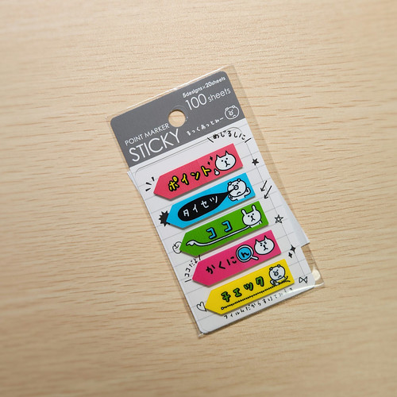

『カーニハンのUNIX回顧録』オンライン読書会第4回目

『カーニハンのUNIX回顧録』オンライン読書会の第4回目に参加してきた。
今回は第5章の後半から第6章まで。 年代的には1970年代から1980年代ときどき1990年代という感じ。
栞がないなら付箋にすればいいぢゃない
前回，紙の本に挟む栞がなくて難儀した話をしたが，あのあと近所の百均（といってもだいぶ遠いが）へ栞を買いに行ってみた。 が，いまどきは栞って売ってないのな。 いや，色気のない紙ペラの栞はあったんだけど，紙の栞はすぐに傷むからなぁ…
というわけで代替品として付箋を買ってみた。

フィルム素材で傷みにくいし，あちこちペタペタ貼れるのでそれなりに便利である。 これで110円（税込み）。 今どきの学生さんはこういうのを使うのだろうか。 恵まれてるねぇ。
並行処理言語の歩み
今回は中身をつまみ食いしながら感想を述べていこう。 まずはここ。
1980年代の初め，ロブ・パイク（Rob Pike）とルカ・カーデリ（Luca Cardelli）は，特にマウスやキーボードなどの入力装置とのやり取りのような，並行処理向け言語を実験していた． それが Squeak と Newsqueak という名前のもとになった． Newsqueak のアイデアは，やがて Plan 9 で使われた並行処理言語の Limbo と Alef に取り入れられ，さらに10年後，2008年に Google でロブ・パイク，ケン・トンプソン，ロバート・グリースマによって作られた Go プログラミング言語に取り入れられた．
おおっ。 ここで Go が出てくるのか（ちなみに原著者の Brian W. Kernighan は『プログラミング言語 C』および『プログラミング言語 Go』の原著者のひとりでもある）。
もちろん，並行処理言語はここに挙がっているものだけではない。 が，きっかけなんてそんなもんだよなぁ，と思う。 そこからちゃんと後継言語に受け継がれていく様子も面白い。 こういう流れが起きる環境を整えることも大事。
プロセッサとプログラミング言語
この話も面白かった。
CRISP 自体は商業的には成功しなかったものの， Unix と C は1980年代から1990年代にかけてのコンピューティングハードウェアに大きな影響を与えた。 成功した命令セットアーキテクチャのほとんどは， C と Unix に調和していた。 Unix と C の可搬性は，大学や，特に企業が新しいアーキテクチャを開発してソフトウェアをすぐに移植することを可能にしただけではなかった。 それは，命令セットが C のコードに適していることを要求すると同時に， C プログラムからコンパイルするのが難しい機能は排除されるよう傾くという影響もあった。
あー，やっぱそうなんだ，という感想。 大昔に，某 DSP 用開発ツールに C 言語に似せたアセンブラ言語というのがあって「へー」と思ったものだ（別に書きやすくなったわけじゃないが。所詮はアセンブラだしw）。
私は1990年代以降の業界しか知らないが，1990年代は UNIX 環境でソースコード互換性からバイナリ互換性が議論されていた頃で，その流れで Java 処理系も登場してくるのだが，そもそもソースコードレベルで互換性があるのは凄いと思っていたのだ，当時。
年長者が賢いとは限らない
このエピソードはクスってなった。
私がその時にエディタ自体に対して何を言ったのかは思い出せない（にもかかわらず， vi は今現在私が最も利用する二つのエディタのうちの一つである）が，私がビルにエディタをいじくり回すのはやめて，博士号を終わらせるべきだと言ったことは覚えている。 彼自身や他の多くの人にとって幸いなことに，彼は私の助言を無視した。 […] 学生が進路について助言を求めてきたら，私はしばしばこの話を持ち出す。 年長者が常に賢明というわけではない。
そういえば，春は進学・就職・異動の季節だが，若い人はこのエピソードは心に刻んだほうがいい。 ホンマ，年長者が若年者より賢いなんてのは幻想なのよ（笑） 日本の宗教って神道とか仏教とか言われるけど，近代以降の日本人が（意識的・無意識的に）影響を受けてるのは儒教だったりする（明治維新で神道と儒教が一気に結びついちゃったしね）。 家族関係を特別視したり，無条件に年配者を敬ってしまう（あるいは歳を食ってるというだけで権威的に振る舞う）姿勢も儒教的メンタリティだよ。 まぁ，今ではそういうのもだいぶ薄れてるとは思うけど，年寄りほど儒教的な刷り込みが深いから，その辺を割り引いて見ていただけると有り難い。
ちなみに vi の作者であるビル・ジョイ（Bill Joy）は，後に大学院を中退して Sun Microsystems の共同設立者となった。 まぁ，当時は日本でもガレージハウスやソフトウェアハウスがボコボコと湧いて出たが，成功したものはほんのひと握りだろう。 スタートアップビジネス（当時はベンチャービジネス）なんてのはそういうもんだけど。
「それがぼくには楽しかったから」は動機ではない？
前回も思ったが『カーニハンのUNIX回顧録』を読むと「また自分でツールを作りたい」って気分になる。
そういえば，以下の記事で久しぶりに有名なあのフレーズを見かけた。
- 「Just for Fun」から遠く離れて – WirelessWire & Schrödinger’s
- WirelessWire News連載更新（「Just for Fun」から遠く離れて） - YAMDAS現更新履歴
「Just for Fun」は Linux の創始者である Linus Torvalds による有名なフレーズ「それがぼくには楽しかったから」のことである。 でも「それがぼくには楽しかったから」はコードを書く理由あるいは動機にはならないよね。 似たような話で登山家が「なぜ山に登るのか」と問われて曰くの「そこに山があるから」は理由でも動機でもない。 何故みんなこれで納得してしまうんだ（笑）
私は上のフレーズの背後に「○○せずにはいられない」という強烈な動機があると思う。 これは昨年の「出雲神話フォーラム2025」に参加した感想でもある。
画家は「描かずにはいられない」。 もの書きは「書かずにはいられない」。 登山家は「（そこに山があるから）登らずにはいられない」。 同じようにプログラマは「（それがぼくには楽しかったから）コードを書かずにはいられない」じゃないだろうか（職業プログラマは別だが）。 少なくとも私はそうだ。 眼前に（プログラムで解けそうな）課題があって，それを（コードを使って）解かずにいられようか（いやない）。
「○○せずにはいられない」という気持ちを駆動するもののひとつは好奇心だろう。 好奇心は「内発的動機付け」である。
外発的動機付けだけでは知性たり得ない。 それは機械と同じである。 いや AI ですら「好奇心」を獲得しようと研究されている昨今なのに，人間の側がそれを放棄（または否定）してどうする。
やはり『はじめて学ぶ ビデオゲームの心理学』の最後のあのフレーズは至言だなぁ，と思うのである。
年齢に関わらず、遊びは私たちの精神を鋭敏に保つために重要です。 […] 遊ぶことは学ぶことです。
ブックマーク
参考図書

- 日経サイエンス2025年6月号 [雑誌]
- 日経サイエンス (編集)
- 日経サイエンス 2025-04-25 (Release 2025-04-25)
- Kindle版
- B0F64YN7KQ (ASIN)
- 評価
2025年6月号の特集は「好奇心に好奇心」。他には「1秒の定義を変える 原子時計のいま」「仲間はずれを作らない教室」など。固定レイアウトなのでブラウザで読める。

- はじめて学ぶ ビデオゲームの心理学 脳のはたらきとユーザー体験（UX）
- セリア ホデント (著), 山根 信二（監修） (著), 山根 信二 (翻訳), 成田 啓行 (翻訳)
- 福村出版 2022-12-15 (Release 2023-07-03)
- Kindle版
- B0C9Z7KGRN (ASIN)
- 評価
Kindle 版が出ている。ゲームデザイナやゲームエンジニアだけでなく，ソフトウェア・エンジニアは全員読むべき。あと，ゲーマーな人も読むといいよ。感想はこちら。

- プログラミング言語Go (ADDISON-WESLEY PROFESSIONAL COMPUTING SERIES)
- Alan A.A. Donovan (著), Brian W. Kernighan (著), 柴田 芳樹 (翻訳)
- 丸善出版 2016-06-20
- 単行本（ソフトカバー）
- 4621300253 (ASIN), 9784621300251 (EAN), 4621300253 (ISBN)
- 評価
著者のひとりは（あの「バイブル」とも呼ばれる）通称 “K&R” の K のほうである。この本は Go 言語の教科書と言ってもいいだろう。と思ったら絶版状態らしい（2025-01 現在）。復刊を望む！

- それがぼくには楽しかったから 全世界を巻き込んだリナックス革命の真実 (小プロ・ブックス)
- リーナス トーバルズ (著), デビッド ダイヤモンド (著), 風見 潤 (翻訳), 中島 洋 (監修)
- 小学館プロダクション 2001-05-10
- 単行本
- 4796880011 (ASIN), 9784796880015 (EAN), 4796880011 (ISBN)
Linux の作者 Linus Torvalds の自伝的作品。

- プログラミング言語C 第2版 ANSI規格準拠
- B.W. カーニハン (著), D.M. リッチー (著), 石田 晴久 (翻訳)
- 共立出版 1989-06-15
- 単行本
- 4320026926 (ASIN), 9784320026926 (EAN), 4320026926 (ISBN)
- 評価
通称 “K&R”。その筋の人々には「バイブル」と呼ばれる名著（当時は）。